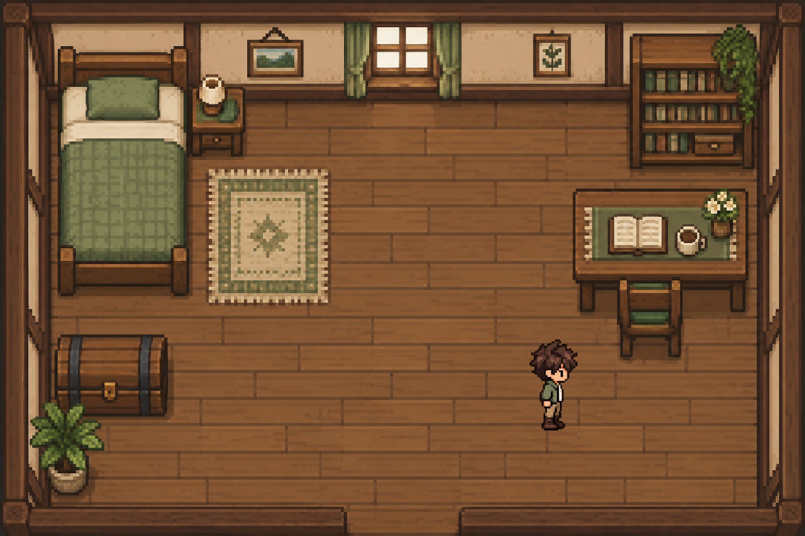

A practical guide to native graphics
Native Pixels
Understand the renderer.
Build a world you can explore.
Learn native 2D WebGPU with Odin and SDL3, one working program at a time. Follow every step from an empty window to an animated character in a furnished room.
Continue where you left off →
- 23 chapters
- A complete, runnable program at every step.
- 47 optional challenges
- Take the game further, at your own pace.
- Read and build offline
- Local fonts, included artwork, complete source.
The learning path
One project. Five parts.
Each part builds on the last. Start at the beginning and keep extending one project directory. Each chapter includes the code and artwork needed for its result.
Establish the ground
Set up Odin and SDL, open a native window, and learn how the GPU turns geometry into pixels.
Put pixels on the window
Connect the window to WebGPU. Choose a device, present a clear frame, and draw your first triangle.
Build a small 2D renderer
Understand vertex memory, build an indexed rectangle, and place it with shader uniforms.
Move one character
Turn keyboard input and elapsed time into movement. Handle resizing, transparency, and cleanup.
A room worth walking through
Add a furnished room, sprite textures, collision, diagnostics, and a character that walks.
Before you start
New to graphics?
You’re in the right place.
You do not need prior Odin or graphics experience. The opening lessons explain the programming notation they use, and later chapters introduce each new graphics concept through a problem in the project.
Read the explanation, edit your project, then build and run it. The chapter includes every complete file, the exact changes, and the expected result. You can skip every challenge and still finish the game.
Create your project and install the toolsYour reference shelf